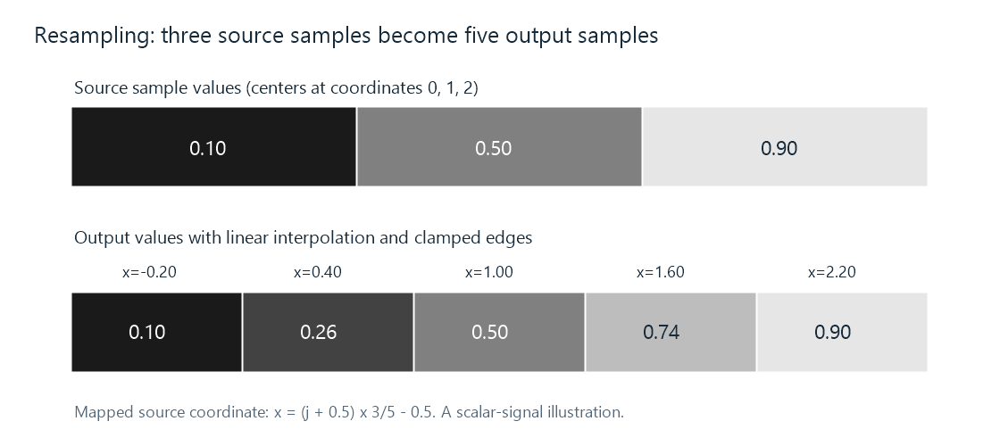

How Video Scaling Works
Video scaling constructs a new picture grid by mapping output positions into the source and filtering the samples that contribute to each result.
A 1920 × 1080 movie shown across a 1280 × 720 picture area needs a new set of samples. A player cannot obtain that grid by changing the resolution label. It must calculate which source information contributes to each of the 1280 × 720 output positions.
Video scaling is that calculation. It occurs during display, during a saved conversion, or inside a server's video processing path. An Emby session can contain more than one such operation: the server may create a smaller encoded picture, and the app may then fit that picture to its display area.
The important decisions are the output grid, the source coordinates it maps to, and the filter used to construct its samples. Those decisions explain both a good resize and familiar defects such as a softened line, a bright halo, or false patterns in fine texture.
A new position between old samples
Take a single row with three scalar values: 0.1, 0.5, 0.9. Place their centers at coordinates 0, 1, and 2. We want five output samples spanning the same picture extent.

This is a scalar-signal example with linear interpolation and clamped edges. It establishes the coordinate and weighting calculation; color and light interpretation are considered below.
One common center-aligned mapping is:
source x = (output j + 0.5) × source width/output width − 0.5.
The half terms refer to sample centers rather than frame borders. For widths 3 and 5, output indices 0 through 4 map to −0.2, 0.4, 1.0, 1.6, 2.2.
An interior output at x = 0.4 lies 40% of the way between source samples 0 and 1. With linear interpolation, its value is:
0.6 × 0.1 + 0.4 × 0.5 = 0.26.
At x = 1.6, the corresponding calculation is 0.4 × 0.5 + 0.6 × 0.9 = 0.74. At x = 1, the original middle sample is recovered. The remaining positions require an edge policy because their coordinates extend beyond the first and last sample centers.
For this example, clamping means treating values beyond the sample array as repetitions of the nearest edge sample. The completed row is 0.1, 0.26, 0.5, 0.74, 0.9. Other coordinate conventions or edge policies can produce different results, so an implementation's complete mapping matters.
A filter assigns the contributions
Linear interpolation uses the two adjacent samples in a row. A wider reconstruction filter can also use samples farther away. Its kernel is a function that assigns a weight according to distance from the desired output coordinate.
For a scalar row, write the calculation as:
output(x) = Σ weight(j, x) × source(j).
The weights normally sum to one. If every participating source sample equals 0.4, the result is then 0.4 × Σ weight = 0.4, preserving a constant field. Normalization becomes particularly useful when the chosen phase or a finite window changes the raw weight sum.
Some kernels use only positive contributions. Others include negative contributions to shape their frequency response. That can retain a stronger transition at an edge, while also allowing the reconstructed value to go outside the neighboring sample range. Ringing works through that effect numerically.
The individual kernel pages explain their mechanisms: nearest-neighbor selects a sample; bilinear interpolates neighboring samples; bicubic, Lanczos, EWA Lanczos, and spline use wider or differently shaped contributions.
Extending the calculation to a picture
A separable filter applies a one-dimensional weighting along each axis. It can first construct horizontally filtered rows, then filter those intermediate results vertically. The product of the horizontal and vertical weights describes the contribution from each source position in the neighborhood.
A radial or polar filter instead assigns weights from two-dimensional distance. Its footprint need not factor into those two independent passes. The EWA example shows why an axis-aligned neighbor and a diagonal neighbor at the same radius can receive equal radial weights but different separable weights.
The source also has multiple component grids. In 4:2:0 video, luma is full size while each chroma component has half the width and height. A stage needs to map each grid correctly, including chroma sample location. It may combine chroma reconstruction with picture resizing rather than making two separate full-size intermediate pictures.
That distinction explains why “the scaler” can process luma and chroma differently. The planes have different source dimensions and may have different reconstruction settings, even when they contribute to the same final RGB picture.
Shrinking requires a wider view of the source
Upscaling asks for more output positions across the same image. Downscaling also asks the result to represent a larger source area with each output sample. Fine changes that fit between the source's samples may be too fine for the new grid.
Consider a row alternating between 0 and 1 at every source position. Keep only every second sample and the output becomes all zero or all one, depending on phase. The original row had a balanced average, but the reduced result can acquire a uniform dark or bright bias.
For that particular two-to-one reduction, averaging each pair gives 0.5 at every output position. It removes the alternation that the coarser grid cannot reliably represent. A general downscaler uses a suitable low-pass footprint before or as part of sampling the output, controlling more complicated high-frequency structure too.
For a reduction factor s below one, a scale-adapted kernel can widen its source-space support by 1/s. At half width, a radius-three footprint can extend six source spacings rather than three. More source samples contribute to each destination value, reflecting the greater area represented there.
This is the reason that applying an upscaling-style neighborhood unchanged while discarding most positions can produce spatial aliasing. It is also why a label such as bilinear or Lanczos needs its downscaling behavior considered along with the kernel formula. Footprint adaptation, implementation limits, and the reduction ratio affect the result.
Which values are being averaged?
Encoded RGB values and linear-light RGB values do not have the same arithmetic meaning. A renderer averaging encoded coordinates performs a different operation from one that first recovers light-proportional values and averages those.
With a deliberately simple transfer model light = encoded value², averaging encoded black 0 and white 1 gives code 0.5, which represents light 0.25. Averaging their light gives 0.5, requiring code √0.5 ≈ 0.707. The model is an illustration, not the BT.709 or sRGB transfer formula.
This difference matters near contrasting edges and small bright features. It belongs to the processing stage's color policy as well as its distance weights. RGB video explains the component interpretation, and color signaling identifies the fields that establish it.
Calculations may also need more precision than the final stored output. An interpolated value can fall between integer source or destination codes. Keeping sufficient working precision postpones the final rounding; dithering can distribute that output rounding where appropriate.
Geometry, filtering, and encoding are separate choices
Resizing dimensions should agree with the intended display shape. A 1440 × 1080 anamorphic source with pixel aspect ratio 4:3 can be resampled to 1920 × 1080 square pixels. That is a change in sample grid and pixel aspect information describing the same 16:9 composition.
Cropping removes part of the image extent. Padding adds border area. Scaling resamples the selected extent. These can be combined to fit a target rectangle, but changing the dimensions without deciding which extent and aspect to preserve can distort the composition.
For a compressed output file, the newly calculated frame then needs encoding. That introduces another set of decisions about precision, chroma sampling, and the preservation of subtle detail. A soft result can originate in the resize, the encode, or a later display resize. The output dimensions identify a grid, not all the operations used to produce it.
Accounting for a complete playback route
Suppose a source is 3840 × 2160, the server creates 1920 × 1080 video, and the app presents it at 1280 × 720. The server's first reduction and the renderer's second reduction each make filtering and sampling choices. The final result need not equal a single direct 3840-to-1280 operation.
For an Emby comparison, record the source dimensions and pixel aspect, the delivered stream's dimensions and sample format, and the app's actual picture area. A kernel name from one conversion stage describes that stage. It does not identify the display's later filtering.
Then inspect the feature that prompted the comparison. A fine repeating texture tests the reduction's alias control; an isolated edge exposes overshoot; colored text exposes chroma reconstruction; a gradient exposes precision and output rounding. Those observations connect a visible difference to the particular calculation that made it.
See Also
- Video Resolution
- Video Pixel Aspect Ratio
- Chroma Upsampling
- Spatial Aliasing in Video
- Scaling Ringing
- Pixel Formats and Memory Layout